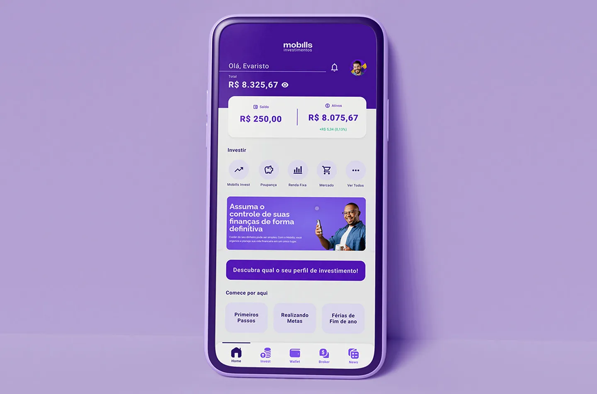
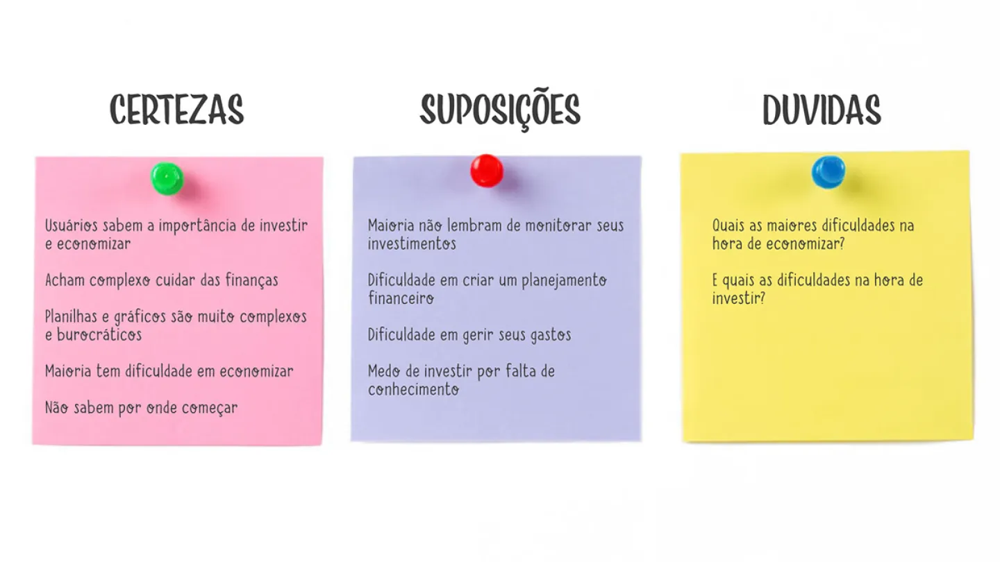
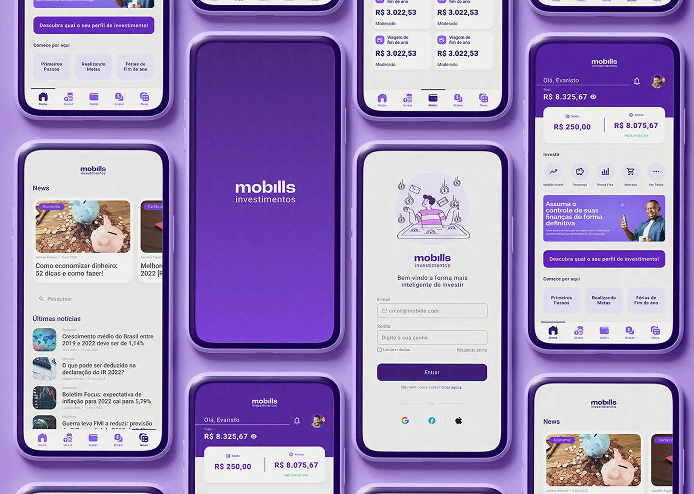
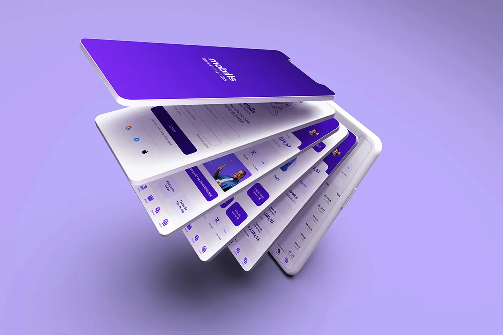
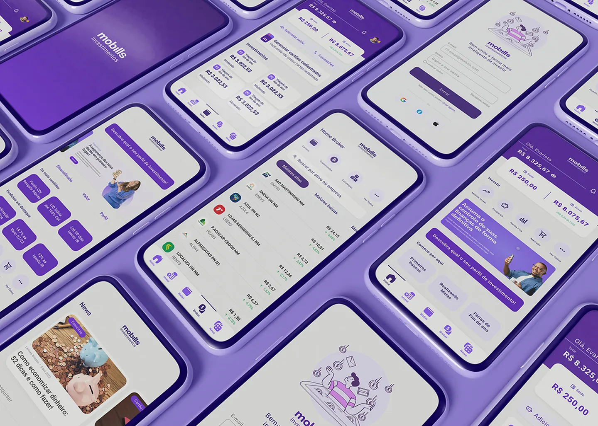

Case Mobills
Investimentos
um produto digital para tornar mais fácil tomar
decisões assertivas para a sua vida financeira

Proposta
Tornar mais fácil tomar decisões assertivas para a vida financeira dos nossos MB's. Visando controlar, analisar e acompanhar todos os investimentos em um só lugar, mesmo que tenha diversas aplicações em diferentes instituições financeiras.
Cenário Atual
Pensando no cenário atual, em que o brasileiro retoma as atividades tentando diminuir os impactos da pandemia, procurando se conscientizar e cuidar melhor de sua saúde financeira.
Com o boom de fintechs, influencers financeiros e maior acessibilidade a materiais de educação financeira, percebe-se um grande mercado na área de investimentos.
Tendo em vista como principal público-alvo a Geração Y (Millennials), que abrange pessoas que nasceram entre os anos de 1981 a 1996 ou até 2004 de acordo com o autor Neil Howe. Essa geração se desenvolveu numa época de grandes avanços tecnológicos, é familiarizada com tecnologia, internet e multidisciplinaridade e tem fácil acesso a informações, o que a torna um público-alvo perfeito para o mercado de investimentos.
Entendendo o Problema
Dar maior controle, poder analisar e acompanhar todos os investimentos em um só lugar, conscientizar sobre a necessidade de equilibrar entradas e despesas e de fazer investimentos como uma forma de fazer o dinheiro render mais.
Transformando a experiência digital do usuário através da educação financeira, criando hábitos saudáveis e de investir de forma intuitiva e mais segura por meio da autogestão.
Pesquisa e Fundamentação
Para fazermos um produto assertivo, o ideal é ter um maior embasamento tanto das necessidades e/ou limitações da empresa para o projeto quanto das necessidades e desejos dos usuários, já que são eles que vão utilizar os serviços no dia a dia.
Desk Research
Para iniciar o projeto foi feita uma Desk Research para reunir informações e mais conhecimento sobre o mercado financeiro, os serviços oferecidos por ele, novas tendências e necessidades dos usuários.
De acordo com os estudos e pesquisas da Associação Brasileira das Entidades dos Mercados Financeiro e de Capitais (Anbima), 58% dos brasileiros não têm nenhum investimento financeiro e 32% dos entrevistados citaram a poupança como opção de investimento.
Ainda de acordo com os estudos da Anbima em conjunto com o Datafolha, entre o público que se declara investidor, a maioria está na classe A (42%), com a classe C na ponta oposta (18%). No total, 62,34% disseram não conhecer nenhum tipo de investimento.
Se pouca gente poupa, é ainda menor a quantidade de pessoas que se informam e sabem como investir seu dinheiro: pouco mais de um terço da população (38%) diz conhecer algum tipo de produto oferecido por bancos e outras instituições.

Matriz CSD
Após um levantamento básico sobre o cenário atual do mercado de investimentos no Brasil, seus serviços, problemas mais comuns enfrentados pelos usuários e soluções já existentes, foi a hora de organizar essas informações para traçar um caminho mais claro para solucionar os problemas.
Utilizei a ferramenta Matriz CSD para me auxiliar e levantar as primeiras suposições e hipóteses do projeto, nessa etapa de descobertas. Entendendo melhor quais informações já havia coletado e quais precisaria coletar para complementar ou afirmar algumas das certezas, responder dúvidas e validar suposições, eu passei para a próxima fase do projeto.
Perfil do usuário
Com esses dados em mãos, criei um perfil de usuário com base no público-alvo com quem queremos conversar. A média de idade do nosso perfil de usuário está entre 25 e 40 anos.
Um perfil Adulto e Jovem Adulto, que são usuários de smartphones e tablets, que prefere resolver a maior parte de suas pendências pela internet e em aplicativos.
Visão estratégica
Mapeei as possíveis etapas do processo de usabilidade do perfil-alvo de usuários, para poder identificar as oportunidades e experiências que facilitam a criação de hábitos financeiros e ajudam o usuário a investir melhor.
Como identificar o perfil de investidor e de renda do usuário e assim poder sugerir melhores planejamentos financeiros, investimentos, definições de metas, conteúdos explicativos e intuitivos, serviços e produtos mais assertivos com o perfil e a renda do mesmo.

Desenvolvimento
Resolvi usar uma linguagem sólida e fluxos simples, reunindo funcionalidades essenciais para o usuário.
Funcionalidades como indicações de produtos, criação do perfil de investimento do usuário, resumo da carteira de investimento, oportunidades para investir, matérias e artigos para aumentar o nível de consciência do mesmo.
A identidade da Mobills foi mantida para garantir a consistência com outros produtos e serviços oferecidos pela mesma.
Acessibilidade
Algumas decisões de design foram tomadas a partir de princípios básicos de usabilidade. Escolhi usar um fundo claro como cor principal para aumentar o contraste com a cor base da marca, garantindo boa legibilidade.
Juntamente com o design familiar em outros produtos, sempre prezando a simplicidade, modernidade, contraste e usabilidade intuitiva.
A seguir você poderá conferir algumas telas da plataforma:

Soluções
Na primeira tela, resolvi colocar informações importantes para o usuário, como seu saldo e as flutuações gerais dos seus ativos, a ferramenta de criação de perfil de investidor, cards de serviços e produtos pré-selecionados pela plataforma, para facilitar e familiarizar o usuário no mundo dos investimentos.
Uma das preocupações foi dividir as funcionalidades e opções de interação do usuário em blocos específicos de serviços e informações, como o Mobills Invest, uma tela de produtos pré-selecionados e mais seguros, para facilitar a inicialização do usuário no universo de investimentos.
A carteira mostra informações mais detalhadas de saldo e ativos escolhidos pelo usuário, entre outras informações e interações mais pessoais.
O mercado é a tela de renda variável, onde o usuário pode escolher de forma intuitiva e autônoma os melhores investimentos. E a tela de News fica encarregada de informar e instruir o usuário com notícias e artigos, por meio dos quais a Mobills pode conversar diretamente com ele.
Conclusão
Lidar com dinheiro e investir não é uma tarefa fácil. Ter clareza e trazer simplicidade é fundamental na criação de um produto digital capaz de facilitar e tornar mais assertivas as escolhas na hora de investir.
Também é preciso estar atento aos feedbacks dos usuários constantemente, para entender as demandas e os processos que precisam ser melhorados: não existe aplicativo perfeito. É um processo circular e infinito de aprendizado e aperfeiçoamento.
